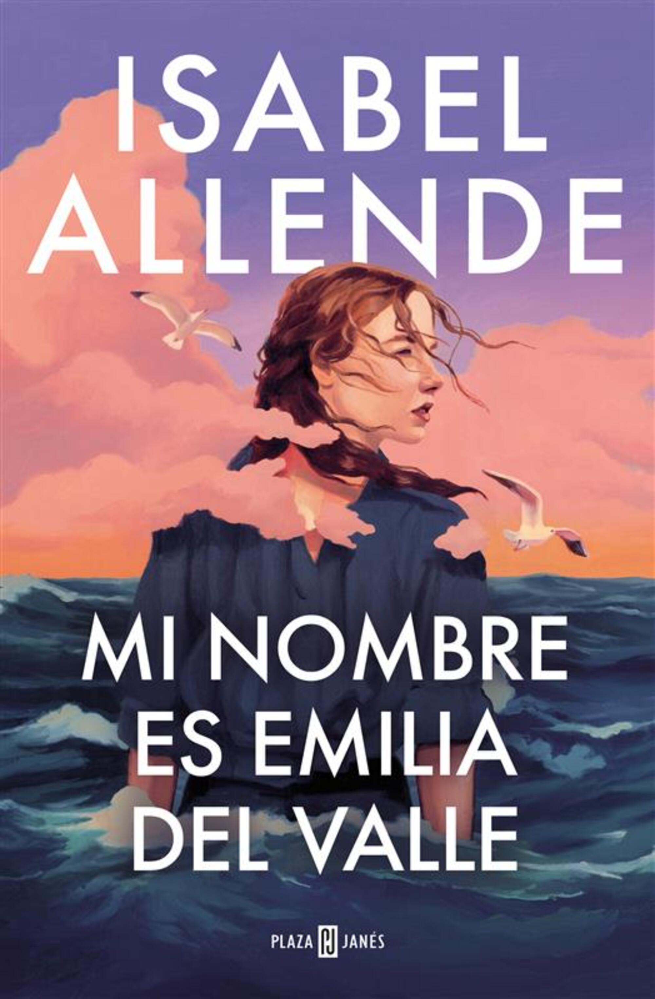
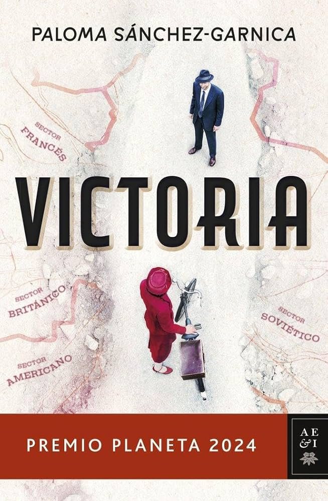
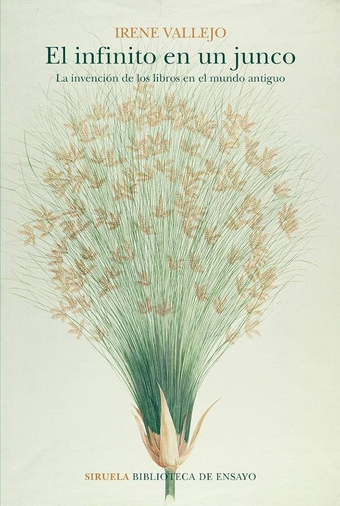
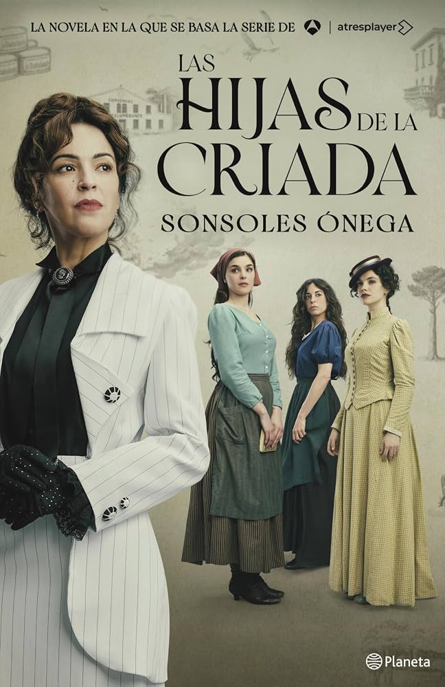

Mi nombre es Emilia del Valle
★★★★★
"Me ha encantado, la protagonista es muy buena y engancha mucho."
Un foro para hablar de libros. Aquí puedes ver los libros más populares en España y leer lo que opinan otros lectores.

★★★★★
"Me ha encantado, la protagonista es muy buena y engancha mucho."

★★★★☆
"Muy interesante, aunque al principio va un poco lento."

★★★★★
"Es un ensayo pero se lee como una novela. Muy recomendable."

★★★★☆
"Una historia familiar muy bonita, me la leí en una semana."